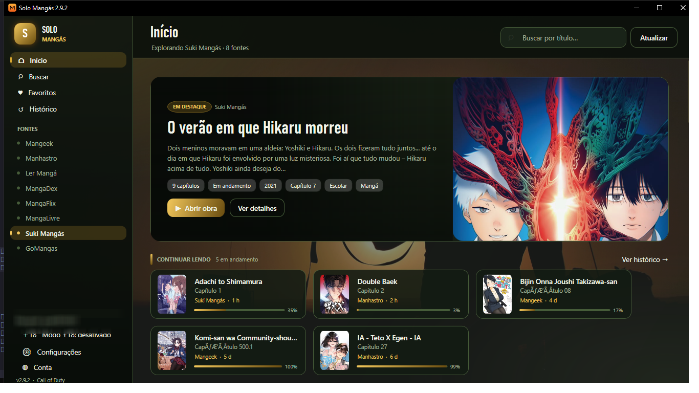

Tema Call of Duty
Foto real de fundo, carvão e oliva, dourado e tipografia Bahnschrift. Em Configurações → Aparência você alterna com o clássico Sangue & aço.
Oito fontes em português no Windows, cinco no Android, leitor em rolagem contínua e sua leitura salva de onde parou. No PC é um executável único; no celular, um APK assinado. Sem conta obrigatória e sem anúncios no app.

Oito fontes em português
Modo +18 opcional, desligado por padrão. Cada fonte tem botão de teste em Configurações.
Telas, leitor, histórico e favoritos construídos em WPF. Nada de WebView2 carregando um site inteiro para mostrar uma página de mangá.
Foto real de fundo, carvão e oliva, dourado e tipografia Bahnschrift. Em Configurações → Aparência você alterna com o clássico Sangue & aço.
C# e WPF sobre .NET 8, com o runtime embutido no executável. Abre rápido, usa pouco e não depende de navegador.
Cada capa é baixada uma única vez e reaproveitada no destaque, nos cards e no “Continuar lendo”. As imagens carregam só quando entram na tela.
Rolagem contínua ou página a página, largura ajustável, zoom e navegação por capítulo — no mouse ou no teclado.
O progresso de cada capítulo fica salvo. “Continuar lendo” mostra exatamente onde você parou, com a porcentagem.
Procure em todas as fontes visíveis de uma vez e agrupe títulos repetidos. Filtre por fonte, gênero ou modo +18.
O app baixa a versão nova, confere o SHA-256, substitui o executável e reabre sozinho. Sem baixar instalador de novo.
Suki Mangás e GoMangas entram no catálogo em português. No leitor, a lista de páginas fica em cache, as primeiras páginas baixam junto com a tela e o próximo capítulo já vem pronto.
store.json das versões anteriores intactos.Telas reais do app. A home abre no tema Call of Duty; as demais capturas mostram o tema clássico Sangue & aço.
Sem instalador, sem cadastro obrigatório e sem dependências escondidas.
Um único arquivo .exe de aproximadamente 83 MB. Não precisa baixar .NET nem WebView2.
Se o Windows SmartScreen avisar, clique em Mais informações e depois em Executar assim mesmo. O app não tem certificado comercial pago.
Abra uma obra pela home ou pela busca. Histórico, favoritos e progresso ficam salvos em %APPDATA%\SoloMangas.
Requisitos: Windows 10 ou 11, 64 bits — o executável é self-contained e leva o runtime do .NET dentro. Android: 7.0 ou mais novo; o APK é universal e instala por cima da versão anterior, mantendo favoritos, histórico e posições.
Windows 2.9.2 ou Android 1.1.1. Nenhuma das duas versões pede conta ou assinatura.
Executável único de 83,1 MB com o runtime do .NET embutido. Oito fontes em português e leitor em cache.
FE592261074CDA09C78E17F48388F52A541D5AB569382C1D3CB70ED9C878DB15
SmartScreen: o executável não tem certificado comercial pago. Se o Windows avisar, clique em “Mais informações” e depois em “Executar assim mesmo”. O SHA-256 acima confere o arquivo baixado.
Tema Call of Duty, leitor em faixas e decodificação AVIF própria: páginas do Manhastro que ficavam pretas agora abrem em qualquer aparelho. Cinco fontes, histórico, favoritos e o +18 da MangaDex.
A1EA58276D2A999B8519948395CE6F19DE3835778F61427CE48B442F87E9EC83
Instalação: abra o APK no aparelho e permita “Instalar apps desconhecidos” para o navegador ou gerenciador de arquivos. O APK é assinado com o mesmo certificado da 1.0.2 e instala por cima, sem perder dados. A 1.1.1 corrige as páginas AVIF que apareciam pretas no Manhastro. A partir da 1.1.0, as próximas versões são baixadas e instaladas pelo próprio app em Ajustes → Verificar atualização, com conferência de SHA-256.
Sim. Não há assinatura, anúncio no app nem cobrança escondida. As obras continuam pertencendo aos autores, editoras e às fontes originais.
No Windows, não: é um único executável self-contained, com o runtime do .NET e as bibliotecas embutidos. No Android, basta instalar o APK uma vez; as atualizações seguintes são instaladas por cima, sem perder os dados.
O executável não tem certificado de assinatura comercial, então o SmartScreen pode avisar em apps novos. O SHA-256 publicado nesta página corresponde exatamente ao arquivo oferecido. Para seguir, clique em Mais informações e em Executar assim mesmo.
Não é obrigatório. Você pode navegar, buscar e ler sem entrar. A conta Mangeek é opcional e serve para o app usar sua sessão do site.
O histórico e os favoritos ficam salvos no computador, mas as páginas e capas vêm das fontes pela internet. Para ler, é preciso estar conectado.
O app é um leitor: ele consulta fontes públicas em português e exibe o conteúdo delas. O Solo Mangás não hospeda mangás. Todo o conteúdo pertence aos seus respectivos autores e editoras.
Sim, de forma opcional e desligada por padrão. O modo +18 só aparece quando você o ativa, e o conteúdo é destinado exclusivamente a maiores de 18 anos.
Sim. O APK 1.1.1 está na seção de download, é assinado e roda no Android 7.0 ou mais novo. Ele traz cinco fontes — Mangeek, Manhastro, MangaDex, MangaFlix e MangaLivre —, com o modo +18 da MangaDex, favoritos, histórico e posições salvos no aparelho. A instalação é por cima da versão anterior, sem perder dados, e não depende do Play Store. A partir da 1.1.0 o próprio app verifica, baixa e instala as próximas atualizações.
O app Android é um porte em Kotlin com as fontes principais; Suki Mangás, GoMangas e Ler Mangá ainda não foram portadas. A versão Windows 2.9.2 é a principal e concentra as oito fontes e o leitor com cache de páginas.
Windows: com o update.json configurado em Configurações → Origem das atualizações, use Verificar atualizações. Android 1.1.0+: em Ajustes → Verificar atualização, o app baixa o APK, confere o SHA-256 e abre o instalador. Também é possível baixar o arquivo novo manualmente e instalar por cima.